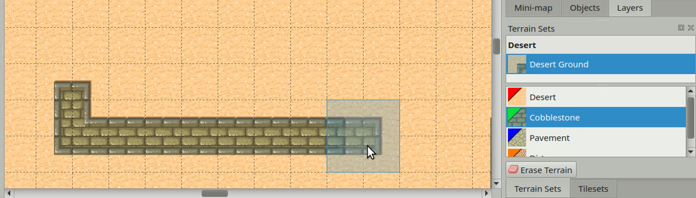

<!doctype html>
<html lang="zh-CN">
<meta charset="utf-8">
<meta name="viewport" content="width=device-width,initial-scale=1">
<title>创作工具周报 · 2026-11-23</title>
<style>
*{box-sizing:border-box}
body{margin:0;background:#e8ede2;color:#203c2d;font:16px "Instrument Sans","PingFang SC",system-ui,sans-serif}
main{max-width:850px;margin:auto;padding:30px 22px 40px}
header{border-top:6px solid #203c2d;padding-top:16px}
time,small{color:#526657}
h1{font:700 clamp(34px,6vw,59px)/1.2 "Instrument Serif","Songti SC",serif;margin:7px 0 23px}
section{margin:0 0 25px;padding-top:16px;border-top:1px solid #9fad9f}
h2{font-size:25px;margin:5px 0 8px}
p{line-height:1.55;margin:0 0 12px}
img,video{display:block;width:100%;height:auto;max-height:540px;object-fit:contain;background:#22372c;border:1px solid #728f7c}
a{color:#224a38;text-underline-offset:3px}
.links{margin:9px 0 0;font-size:14px}
footer{border-top:1px solid #9fad9f;padding-top:13px;font-size:14px}
@media(max-width:630px){main{padding:18px 14px 30px}}
</style>
<main>
<header><time datetime="2026-11-23">2026-11-23</time><h1>创作工具周报</h1></header>
<section><small>游戏</small><h2>PixelLab</h2>
<p>可生成俯视像素地图与衔接瓦片，用来制作沙滩、海水和植被等场景素材。</p><video controls playsinline preload="metadata" poster="demo-1.jpg" src="demo-1.mp4" aria-label="PixelLab 官方演示"></video>
<p class="links"><a href="https://www.pixellab.ai/docs/tools/create-tileset">项目与用法</a> · <a href="https://www.pixellab.ai/tools_images/game_maps-double.gif">原始演示</a></p></section>
<section><small>游戏</small><h2>Tiled</h2>
<p>可用地形画笔铺设石板路，帮助搭建俯视像素游戏的街景与地图。</p>
<p class="links"><a href="https://doc.mapeditor.org/en/stable/manual/terrain/">项目与用法</a> · <a href="https://doc.mapeditor.org/en/stable/_images/drawing-cobblestone.png">原始演示</a></p></section>
<footer>图像与视频来自各项目的公开演示。 </footer>
</main>
</html>
